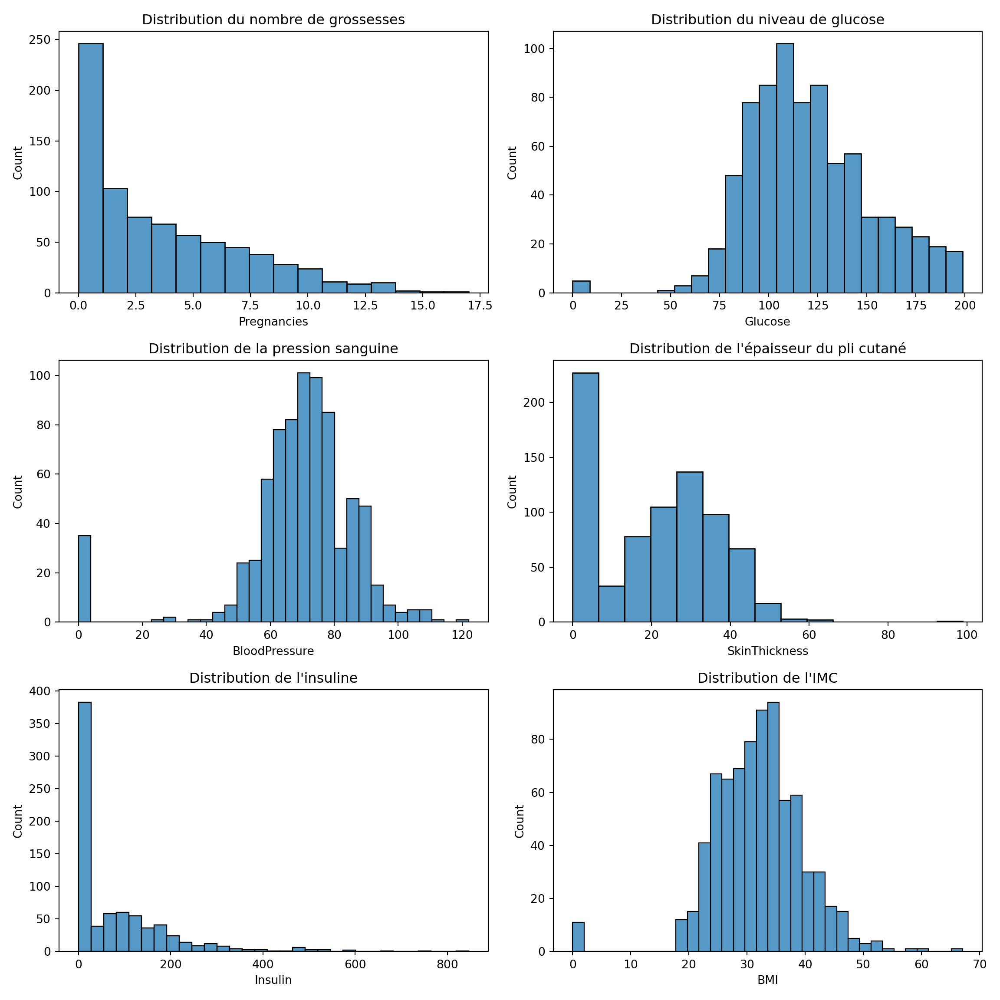
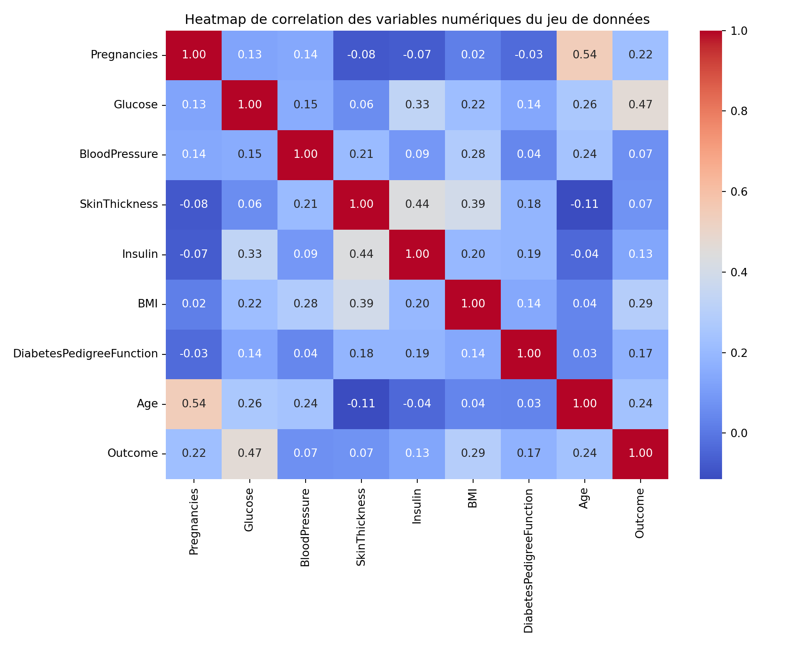
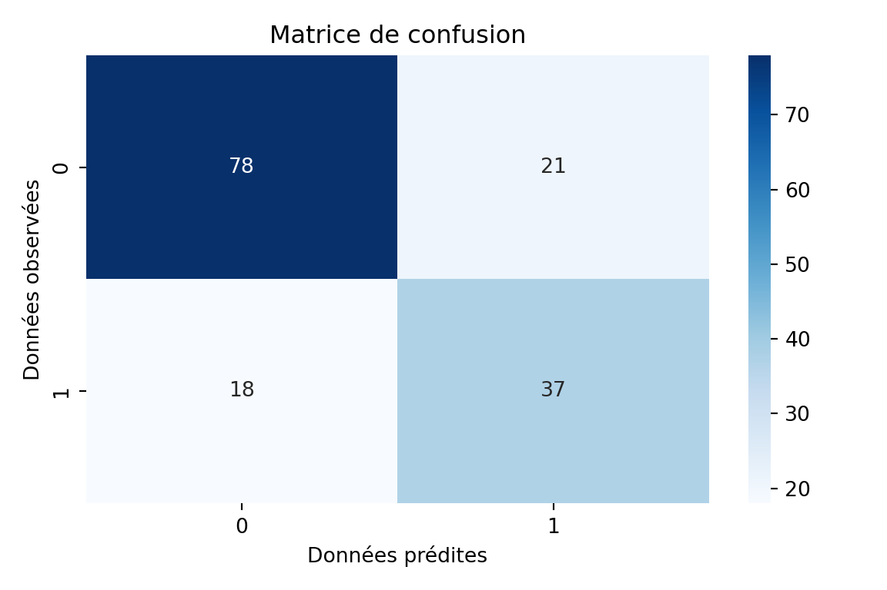
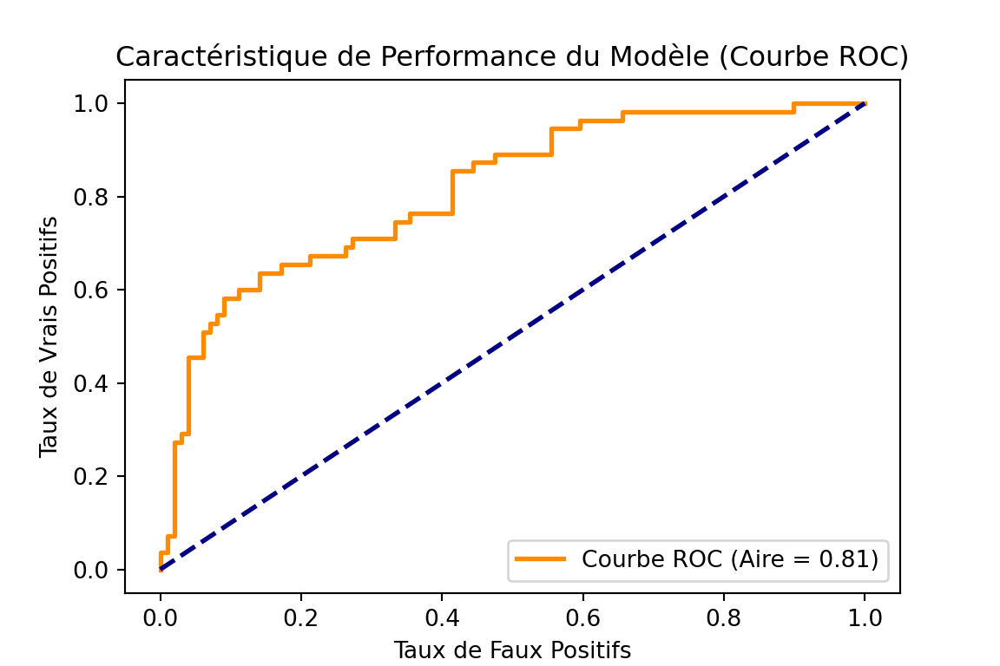

import pandas as pd
import seaborn as sns
import matplotlib.pyplot as plt
from IPython.display import display
import numpy as npModélisation des données à variables dépendantes qualitatives : Regression logistique à variable dépendante dichotomique
Introduction
Le modèle logistique est une technique statistique largement utilisée pour modéliser des variables dépendantes binaires ou des proportions. Il est fondamental en économétrie, en sciences sociales, en biostatistique et dans de nombreux autres domaines.
Formulation du Modèle Logistique
La régression logistique permet de modéliser la probabilité d’un événement sous la forme : \[\begin{equation} P(Y=1 | X) = \frac{e^{\beta_0 + \beta_1 X_1 + \dots + \beta_k X_k}}{1 + e^{\beta_0 + \beta_1 X_1 + \dots + \beta_k X_k}}. \end{equation}\]
La fonction logistique peut être réécrite sous la forme des cotes (odds) : \[\begin{equation} \frac{P(Y=1 | X)}{1 - P(Y=1 | X)} = e^{\beta_0 + \beta_1 X_1 + \dots + \beta_k X_k}. \end{equation}\]
En prenant le logarithme des deux côtés, nous obtenons le modèle de régression logistique sous sa forme linéarisée : \[\begin{equation} \log \left( \frac{P(Y=1 | X)}{1 - P(Y=1 | X)} \right) = \beta_0 + \beta_1 X_1 + \dots + \beta_k X_k. \end{equation}\]
Importance en Classification
Le modèle logistique est particulièrement utilisé en classification binaire. Il permet d’attribuer une observation à l’une des deux catégories possibles en fonction d’un seuil de probabilité (souvent fixé à 0.5).
En apprentissage automatique, il est souvent employé pour des tâches telles que :
La
détection de spamsdans les emails.La
reconnaissance de fraudesbancaires.La
segmentation de clientsen fonction de leur probabilité d’achat.
Interprétation des Coefficients
Dans un modèle logistique, chaque coefficient \(\beta_i\) représente l’effet d’une variation de \(X_i\) sur le logarithme des cotes. Cela signifie que pour une variation de \(X_i\) d’une unité, la variation relative des cotes est donnée par :
\[\begin{equation} e^{\beta_i}. \end{equation}\]
Si \(\beta_i > 0\), alors une augmentation de \(X_i\) accroît la probabilité de succès (\(Y=1\)). Si \(\beta_i < 0\), alors une augmentation de \(X_i\) diminue cette probabilité.
Cependant, si l’on souhaite interpréter directement l’effet de \(X_i\) sur \(P(Y=1)\), il faut calculer les effets marginaux : \[\begin{equation} \frac{\partial P(Y=1 | X)}{\partial X_i} = P(Y=1 | X) (1 - P(Y=1 | X)) \beta_i. \end{equation}\]
Les effets marginaux permettent d’exprimer l’impact de \(X_i\) sur la probabilité directement, sans passer par les cotes.
Méthodes d’Estimation
Les paramètres sont estimés par la méthode du maximum de vraisemblance. La fonction de vraisemblance pour \(n\) observations est donnée par : \[\begin{equation} L(\beta) = \prod_{i=1}^{n} P(Y_i | X_i)^{Y_i} (1 - P(Y_i | X_i))^{1 - Y_i}. \end{equation}\]
En prenant le logarithme, nous obtenons la log-vraisemblance : \[\begin{equation} \log L(\beta) = \sum_{i=1}^{n} \left[ Y_i \log P(Y_i | X_i) + (1 - Y_i) \log (1 - P(Y_i | X_i)) \right]. \end{equation}\]
L’estimation des paramètres se fait par :
- La méthode de
Newton-Raphson. - L’algorithme de
descente de gradient(en apprentissage automatique). - Des
solveurs numériques spécialisés(comme ceux implémentés dans R ou Python).
Applications
Le modèle logistique est utilisé dans divers domaines :
Médecine : prédiction de la présence d’une maladie en fonction de facteurs de risque.
Marketing : estimation de la probabilité qu’un client achète un produit donné.
Finance : modélisation du risque de défaut d’un emprunteur.
Économie : analyse des choix binaires comme l’adoption d’une nouvelle technologie.
Exemple d’Application
Supposons que nous souhaitions modéliser l’effet du revenu (\(X\)) sur la probabilité qu’un individu possède une assurance santé (\(Y\)). Nous estimons alors un modèle logistique : \[\begin{equation} P(Y=1 | X) = \frac{e^{\beta_0 + \beta_1 X}}{1 + e^{\beta_0 + \beta_1 X}}. \end{equation}\]
Si l’estimation de \(\beta_1\) est positive et significative, cela signifie que plus le revenu est élevé, plus la probabilité de posséder une assurance santé est grande.
Conclusion
Le modèle logistique est un outil puissant pour la modélisation des variables binaires et la classification. Il permet d’assigner des probabilités à des événements et d’interpréter les relations entre variables explicatives et réponse. Son estimation repose sur le maximum de vraisemblance, et son interprétation nécessite souvent le calcul des effets marginaux pour comprendre directement l’impact des variables explicatives sur la probabilité d’occurrence de l’événement étudié.
Place à la pratique avec des données sur le diabète
Importation des bibliothèques necessaires
Chargement des données et verification suscinte de leur qualité
df = pd.read_csv('diabetes-dataset.csv')
print('\nAffichage des données\n')
Affichage des donnéesdisplay(df.head(5)) Pregnancies Glucose BloodPressure ... DiabetesPedigreeFunction Age Outcome
0 6 148 72 ... 0.627 50 1
1 1 85 66 ... 0.351 31 0
2 8 183 64 ... 0.672 32 1
3 1 89 66 ... 0.167 21 0
4 0 137 40 ... 2.288 33 1
[5 rows x 9 columns]print('\nInformations sur les données\n')
Informations sur les donnéesdisplay(df.info)<bound method DataFrame.info of Pregnancies Glucose ... Age Outcome
0 6 148 ... 50 1
1 1 85 ... 31 0
2 8 183 ... 32 1
3 1 89 ... 21 0
4 0 137 ... 33 1
.. ... ... ... ... ...
763 10 101 ... 63 0
764 2 122 ... 27 0
765 5 121 ... 30 0
766 1 126 ... 47 1
767 1 93 ... 23 0
[768 rows x 9 columns]>print('\nResumé statistique des données\n')
Resumé statistique des donnéesdisplay(df.describe)<bound method NDFrame.describe of Pregnancies Glucose ... Age Outcome
0 6 148 ... 50 1
1 1 85 ... 31 0
2 8 183 ... 32 1
3 1 89 ... 21 0
4 0 137 ... 33 1
.. ... ... ... ... ...
763 10 101 ... 63 0
764 2 122 ... 27 0
765 5 121 ... 30 0
766 1 126 ... 47 1
767 1 93 ... 23 0
[768 rows x 9 columns]>Chargement des données et verification suscinte de leur qualité
Affichage des informations sur les données
df = pd.read_csv('diabetes-dataset.csv')
print('\nAffichage des données\n')
Affichage des donnéesdisplay(df.head(5)) Pregnancies Glucose BloodPressure ... DiabetesPedigreeFunction Age Outcome
0 6 148 72 ... 0.627 50 1
1 1 85 66 ... 0.351 31 0
2 8 183 64 ... 0.672 32 1
3 1 89 66 ... 0.167 21 0
4 0 137 40 ... 2.288 33 1
[5 rows x 9 columns]print('\nInformations sur les données\n')
Informations sur les donnéesdisplay(df.info)<bound method DataFrame.info of Pregnancies Glucose ... Age Outcome
0 6 148 ... 50 1
1 1 85 ... 31 0
2 8 183 ... 32 1
3 1 89 ... 21 0
4 0 137 ... 33 1
.. ... ... ... ... ...
763 10 101 ... 63 0
764 2 122 ... 27 0
765 5 121 ... 30 0
766 1 126 ... 47 1
767 1 93 ... 23 0
[768 rows x 9 columns]>print('\nResumé statistique des données\n')
Resumé statistique des donnéesdisplay(df.describe)<bound method NDFrame.describe of Pregnancies Glucose ... Age Outcome
0 6 148 ... 50 1
1 1 85 ... 31 0
2 8 183 ... 32 1
3 1 89 ... 21 0
4 0 137 ... 33 1
.. ... ... ... ... ...
763 10 101 ... 63 0
764 2 122 ... 27 0
765 5 121 ... 30 0
766 1 126 ... 47 1
767 1 93 ... 23 0
[768 rows x 9 columns]>Vérification des valeurs manquantes
df.columns.isna().sum()0 Il y’ a aucune valeur manquante car les données ont bien été nettoyées avant d’être mise à disposition sur kaggle.
Affichage des statistiques des variables
Etant données que les informations sur les variables sont en ce moment ou j’écris indisponibles sur kaggle.
print('Affichage des valeurs uniques des variables\n')Affichage des valeurs uniques des variablesfor variable in df.columns:
if variable != "DiabetesPedigreeFunction": # je saute car ça fait beaucoup long à l'affichage
print(f'\n {variable}\n')
print(df[variable].unique())
Pregnancies
[ 6 1 8 0 5 3 10 2 4 7 9 11 13 15 17 12 14]
Glucose
[148 85 183 89 137 116 78 115 197 125 110 168 139 189 166 100 118 107
103 126 99 196 119 143 147 97 145 117 109 158 88 92 122 138 102 90
111 180 133 106 171 159 146 71 105 101 176 150 73 187 84 44 141 114
95 129 79 0 62 131 112 113 74 83 136 80 123 81 134 142 144 93
163 151 96 155 76 160 124 162 132 120 173 170 128 108 154 57 156 153
188 152 104 87 75 179 130 194 181 135 184 140 177 164 91 165 86 193
191 161 167 77 182 157 178 61 98 127 82 72 172 94 175 195 68 186
198 121 67 174 199 56 169 149 65 190]
BloodPressure
[ 72 66 64 40 74 50 0 70 96 92 80 60 84 30 88 90 94 76
82 75 58 78 68 110 56 62 85 86 48 44 65 108 55 122 54 52
98 104 95 46 102 100 61 24 38 106 114]
SkinThickness
[35 29 0 23 32 45 19 47 38 30 41 33 26 15 36 11 31 37 42 25 18 24 39 27
21 34 10 60 13 20 22 28 54 40 51 56 14 17 50 44 12 46 16 7 52 43 48 8
49 63 99]
Insulin
[ 0 94 168 88 543 846 175 230 83 96 235 146 115 140 110 245 54 192
207 70 240 82 36 23 300 342 304 142 128 38 100 90 270 71 125 176
48 64 228 76 220 40 152 18 135 495 37 51 99 145 225 49 50 92
325 63 284 119 204 155 485 53 114 105 285 156 78 130 55 58 160 210
318 44 190 280 87 271 129 120 478 56 32 744 370 45 194 680 402 258
375 150 67 57 116 278 122 545 75 74 182 360 215 184 42 132 148 180
205 85 231 29 68 52 255 171 73 108 43 167 249 293 66 465 89 158
84 72 59 81 196 415 275 165 579 310 61 474 170 277 60 14 95 237
191 328 250 480 265 193 79 86 326 188 106 65 166 274 77 126 330 600
185 25 41 272 321 144 15 183 91 46 440 159 540 200 335 387 22 291
392 178 127 510 16 112]
BMI
[33.6 26.6 23.3 28.1 43.1 25.6 31. 35.3 30.5 0. 37.6 38. 27.1 30.1
25.8 30. 45.8 29.6 43.3 34.6 39.3 35.4 39.8 29. 36.6 31.1 39.4 23.2
22.2 34.1 36. 31.6 24.8 19.9 27.6 24. 33.2 32.9 38.2 37.1 34. 40.2
22.7 45.4 27.4 42. 29.7 28. 39.1 19.4 24.2 24.4 33.7 34.7 23. 37.7
46.8 40.5 41.5 25. 25.4 32.8 32.5 42.7 19.6 28.9 28.6 43.4 35.1 32.
24.7 32.6 43.2 22.4 29.3 24.6 48.8 32.4 38.5 26.5 19.1 46.7 23.8 33.9
20.4 28.7 49.7 39. 26.1 22.5 39.6 29.5 34.3 37.4 33.3 31.2 28.2 53.2
34.2 26.8 55. 42.9 34.5 27.9 38.3 21.1 33.8 30.8 36.9 39.5 27.3 21.9
40.6 47.9 50. 25.2 40.9 37.2 44.2 29.9 31.9 28.4 43.5 32.7 67.1 45.
34.9 27.7 35.9 22.6 33.1 30.4 52.3 24.3 22.9 34.8 30.9 40.1 23.9 37.5
35.5 42.8 42.6 41.8 35.8 37.8 28.8 23.6 35.7 36.7 45.2 44. 46.2 35.
43.6 44.1 18.4 29.2 25.9 32.1 36.3 40. 25.1 27.5 45.6 27.8 24.9 25.3
37.9 27. 26. 38.7 20.8 36.1 30.7 32.3 52.9 21. 39.7 25.5 26.2 19.3
38.1 23.5 45.5 23.1 39.9 36.8 21.8 41. 42.2 34.4 27.2 36.5 29.8 39.2
38.4 36.2 48.3 20. 22.3 45.7 23.7 22.1 42.1 42.4 18.2 26.4 45.3 37.
24.5 32.2 59.4 21.2 26.7 30.2 46.1 41.3 38.8 35.2 42.3 40.7 46.5 33.5
37.3 30.3 26.3 21.7 36.4 28.5 26.9 38.6 31.3 19.5 20.1 40.8 23.4 28.3
38.9 57.3 35.6 49.6 44.6 24.1 44.5 41.2 49.3 46.3]
Age
[50 31 32 21 33 30 26 29 53 54 34 57 59 51 27 41 43 22 38 60 28 45 35 46
56 37 48 40 25 24 58 42 44 39 36 23 61 69 62 55 65 47 52 66 49 63 67 72
81 64 70 68]
Outcome
[1 0]Au vu de ces valeurs, on peut dire que (vu qu’il n’y a aucune description des disponible sur kaggle):
pregnanciesrepresente le nombre de grossesses contractées;glucoserepresente la quantité de glucose dans le sang;BloodPressurerepresente la pression sanguine;SkinThicknessrepresente l’épaisseur du pli cutané tricipital;BMIcorrespond à l’Indice de Masse Corporelle (IMC)Agede la patienteInsulinreprésente la concentration sérique d’insuline mesurée (généralement en micro-unités par millilitre (μU/ml))DiabetesPedigreeFunctionreprésente une mesure de la prédisposition génétique au diabèteOutcomerepresente l’état de la patiente (atteinte ou non du diabète)
Analyse exploratoire des données
Cette analyse est effectuée dans l’optique de mieux comprendre les données afin de pouvoir bien spécifier le modèle logistique.
Analyse descriptives rapides (Voir la distribution des données)
# Création de la figure avec une grille 3 lignes x 2 colonnes
fig, axes = plt.subplots(3, 2, figsize=(12, 12))
# Premier sous-graphe : Distribution du nombre de grossesses
sns.histplot(data=df['Pregnancies'], ax=axes[0, 0])
axes[0, 0].set_title("Distribution du nombre de grossesses")
# Deuxième sous-graphe : Distribution du niveau de glucose
sns.histplot(data=df['Glucose'], ax=axes[0, 1])
axes[0, 1].set_title("Distribution du niveau de glucose")
# Troisième sous-graphe : Distribution de la pression sanguine
sns.histplot(data=df['BloodPressure'], ax=axes[1, 0])
axes[1, 0].set_title("Distribution de la pression sanguine")
# Quatrième sous-graphe : Distribution de l'épaisseur du pli cutané (SkinThickness)
sns.histplot(data=df['SkinThickness'], ax=axes[1, 1])
axes[1, 1].set_title("Distribution de l'épaisseur du pli cutané")
# Cinquième sous-graphe : Distribution de l'insuline
sns.histplot(data=df['Insulin'], ax=axes[2, 0])
axes[2, 0].set_title("Distribution de l'insuline")
# Sixième sous-graphe : Distribution de l'IMC (BMI)
sns.histplot(data=df['BMI'], ax=axes[2, 1])
axes[2, 1].set_title("Distribution de l'IMC")
# Ajustement automatique des espaces pour
# éviter le chevauchement des titres et labels
plt.tight_layout()
# Affichage de la figure
plt.show()
Verification de la colinéarité
En effet avant de spécifier un modèle, il faut s’assurer qu’il n’y a pas multicolinéarité. C’est-à-dire verifier que les variables ne sont pas corrélées entre elles ce qui permettra d’éviter de fausses estimations.
# Sélectionner que les variables numériques des données
df_variables_numeriques = df.select_dtypes(include=[np.number])
plt.figure(figsize=(10, 8))
sns.heatmap(df_variables_numeriques.corr(), annot=True, cmap='coolwarm', fmt='.2f')
plt.title('Heatmap de correlation des variables numériques du jeu de données')
plt.tight_layout()
plt.show()
Ce corrélollogramme montre que les variables ne sont pas linéairement corrélées entre elle. Donc on peut ajuster le modèle de regression logistique.
Spécification et évalution du modèle logistique
A ce niveau, j’ai partitionné les données en ammont dans le but de faire du machine learning (ajustement, prediction et validation du modèle) plus tard (dans la section suivante). Nous avons les données d’entrainement qui constituent 80% des données et des données de test qui en constituent 20. Ici j’ajuste juste un modèle de regression logistique aux données que j’essaie d’interpreter.
# Les bibliothèques de machine learning
from sklearn.model_selection import train_test_split
from sklearn.linear_model import LogisticRegression
from sklearn.metrics import accuracy_score, confusion_matrix, roc_curve, auc
from sklearn.inspection import permutation_importance# Separation des variables explicatives and de la variable dépendante
# X : matrice des variables explicatives
X = df.drop('Outcome', axis=1)
# y : variable dépendante
y = df['Outcome']
# partition des données en données de tests et d'entrainement
X_train, X_test, y_train, y_test = train_test_split(X, y, test_size=0.2, random_state=42)import statsmodels.api as sm
# Ajout d'une colonne de 1 pour l'intercept (obligatoire dans statsmodels)
X_train_const = sm.add_constant(X_train)
# Création du modèle logistique
model = sm.Logit(y_train, X_train_const)
# Ajustement du modèle
result = model.fit()Optimization terminated successfully.
Current function value: 0.467835
Iterations 6# Affichage du résumé avec les p-values
display(result.summary()) Logit Regression Results
==============================================================================
Dep. Variable: Outcome No. Observations: 614
Model: Logit Df Residuals: 605
Method: MLE Df Model: 8
Date: Thu, 22 May 2025 Pseudo R-squ.: 0.2752
Time: 18:47:06 Log-Likelihood: -287.25
converged: True LL-Null: -396.34
Covariance Type: nonrobust LLR p-value: 9.311e-43
============================================================================================
coef std err z P>|z| [0.025 0.975]
--------------------------------------------------------------------------------------------
const -9.0359 0.837 -10.802 0.000 -10.675 -7.396
Pregnancies 0.0645 0.036 1.791 0.073 -0.006 0.135
Glucose 0.0341 0.004 8.055 0.000 0.026 0.042
BloodPressure -0.0139 0.006 -2.260 0.024 -0.026 -0.002
SkinThickness 0.0031 0.008 0.397 0.691 -0.012 0.019
Insulin -0.0018 0.001 -1.782 0.075 -0.004 0.000
BMI 0.1026 0.017 5.948 0.000 0.069 0.136
DiabetesPedigreeFunction 0.6945 0.330 2.107 0.035 0.049 1.341
Age 0.0371 0.011 3.400 0.001 0.016 0.058
============================================================================================Qualité d’Ajustement
Log-Likelihood : -287.25. Un log-vraisemblance plus élevé (moins négatif) indique un meilleur ajustement.
Pseudo R-squared : 0.2752. Cela signifie que le modèle explique environ 27.52% de la variabilité dans les données, ce qui indique un ajustement modéré. Dans les modèles linéaires généralisés, il est fréquent d’avoir des pseudo-R2 un peu faible.
LLR p-value : 9.311e-43, très faible, indiquant que le modèle est significatif globalement.
Adéquation du Modèle
Convergence : Le modèle a convergé en 6 itérations, suggérant un bon comportement de l’algorithme d’optimisation.
Df Model : 8, indiquant 8 variables explicatives.
Interprétation des Coefficients
La probabilité \(p\) que \(y = 1\) (c’est-à-dire que la patiente ait le diabète) est donnée par la fonction sigmoïde :
\(p = \frac{1}{1 + \exp(-\beta)}\)
où : - \(\beta\) est le coefficient du modèle de régression logistique.
- \(\exp(-\beta)\) représente l’exponentielle de \(-\beta\).
Ainsi, cette fonction transforme la valeur linéaire ( ) en une probabilité entre 0 et 1.
Intercept (-9.0359) : Lorsque toutes les variables sont à 0, la probabilité prédite que y=1 est proche de 0.
Glucose (0.0341, p<0.001) : Une augmentation de 1 unité de glucose augmente significativement les odds de l’issue y=1.
BMI (0.1026, p<0.001) : Indique une relation positive forte entre l’IMC et l’issue.
BloodPressure (-0.0139, p=0.024) : Relation négative significative, mais l’effet est faible.
DiabetesPedigreeFunction (0.6945, p=0.035) : Un antécédent familial a un impact positif significatif.
Age (0.0371, p=0.001) : L’âge est un facteur significatif.
SkinThickness et Insulin : Effet non significatif (au seuil de risque \(\alpha\) = 0,05).
Conclusion
Le modèle a une bonne capacité prédictive mais n’explique pas toute la variabilité. Certaines variables sont significatives (Glucose, BMI, Age), alors que d’autres, comme l’Insuline, ne le sont pas.
Machine learning
Ajustement du modèle aux données d’apprentissage
# Initialisation et entrainnement du classificateur (Regression Logistique)
model = LogisticRegression(max_iter=1000)
model.fit(X_train, y_train)LogisticRegression(max_iter=1000)In a Jupyter environment, please rerun this cell to show the HTML representation or trust the notebook.
On GitHub, the HTML representation is unable to render, please try loading this page with nbviewer.org.
LogisticRegression(max_iter=1000)
# faire les prediction sur les données de test
y_pred = model.predict(X_test)
# calcul du score de précision
accuracy = accuracy_score(y_test, y_pred)
print(f'Accuracy Score: {accuracy:.4f}')Accuracy Score: 0.7468 L’accuracy score de 0.7468 signifie que le modèle a correctement classé 74.68% des échantillons dans le jeu de test. Cette métrique donne une indication de la proportion des prédictions correctes par rapport au nombre total d’observations. Plus l’accuracy est proche de 1 (ou 100%), plus le modèle est performant.
Evaluation du modèle
Matrice de confusion
cm = confusion_matrix(y_test, y_pred)
plt.figure(figsize=(6,4))
sns.heatmap(cm, annot=True, fmt='d', cmap='Blues')
plt.title('Matrice de confusion')
plt.xlabel('Données prédites')
plt.ylabel('Données observées')
plt.tight_layout()
plt.show()
\[ \textbf{Vrais Positifs (VP)} = 37 \quad \text{(Modèle prédit que la patiente a le diabète et c'est correct)} \] \[ \textbf{Faux Positifs (FP)} = 21 \quad \text{(Modèle prédit que la patiente a le diabète, mais c'est incorrect)} \]
\[ \textbf{Faux Négatifs (FN)} = 18 \quad \text{(Modèle prédit que la patiente n'a pas le diabète, mais c'est incorrect)} \]
\[ \textbf{Vrais Négatifs (VN)} = 78 \quad \text{(Modèle prédit que la patiente n'a pas le diabète et c'est correct)} \]
Métriques de performance
\[ \text{Précision} = \frac{\text{VP}}{\text{VP} + \text{FP}} = \frac{37}{37 + 21} = \frac{37}{58} \approx 0.6379 \]
\[ \textbf{Rappel} (Recall) : \text{Rappel} = \frac{\text{VP}}{\text{VP} + \text{FN}} = \frac{37}{37 + 18} = \frac{37}{55} \approx 0.6727 \]
\[ \textbf{Score F1} (F1-Score) : \text{F1-Score} = 2 \times \frac{\text{Précision} \times \text{Rappel}}{\text{Précision} + \text{Rappel}} = 2 \times \frac{0.6379 \times 0.6727}{0.6379 + 0.6727} \approx 0.6548 \]
\[ \textbf{Exactitude} (Accuracy) : \text{Exactitude} = \frac{\text{VP} + \text{VN}}{\text{Total}} = \frac{37 + 78}{37 + 78 + 21 + 18} = \frac{115}{154} \approx 0.7468 \]
Courbe de ROC
y_prob = model.predict_proba(X_test)[:, 1]
fpr, tpr, thresholds = roc_curve(y_test, y_prob)
roc_auc = auc(fpr, tpr)
plt.figure(figsize=(6,4))
plt.plot(fpr, tpr, color='darkorange', lw=2, label=f'Courbe ROC (Aire = {roc_auc:.2f})')
plt.plot([0, 1], [0, 1], color='navy', lw=2, linestyle='--')
plt.xlabel('Taux de Faux Positifs')
plt.ylabel('Taux de Vrais Positifs')
plt.title('Caractéristique de Performance du Modèle (Courbe ROC)')
plt.legend(loc='lower right')
plt.show()
La courbe ROC (Receiver Operating Characteristic) est un graphique qui permet d’évaluer la performance d’un modèle de classification binaire. Elle trace la relation entre :
Le Taux de Vrais Positifs (TPR, True Positive Rate) : La proportion des vrais positifs parmi les cas positifs réels.
Le Taux de Faux Positifs (FPR, False Positive Rate) : La proportion des faux positifs parmi les cas négatifs réels.
La courbe ROC montre comment le modèle se comporte pour différents seuils de décision. Un modèle parfait aura une courbe qui monte rapidement vers le coin supérieur gauche (haute TPR et faible FPR), tandis qu’un modèle aléatoire suivra la diagonale du graphique (FPR = TPR).
L’Aire Sous la Courbe (AUC) mesure la qualité globale du modèle. Une AUC proche de 1 indique un excellent modèle, tandis qu’une AUC proche de 0.5 indique un modèle équivalent à un choix aléatoire.
Dans notre cas AUC vaut 0,81 donc notre modèle tient la route.
Verifions qu’on a les même coefficients que ceux de l’ajustement à la section précédente
model.intercept_array([-9.00707993])# affichage des coefficients estimés du modèle
model.coef_array([[ 0.06436473, 0.03410147, -0.01387533, 0.00326297, -0.00180169,
0.10262329, 0.62588811, 0.03708342]])Et oui on a les mêmes coefficients.
Si vous avez des questions, vous pouvez me contacter !!!